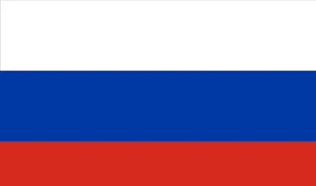
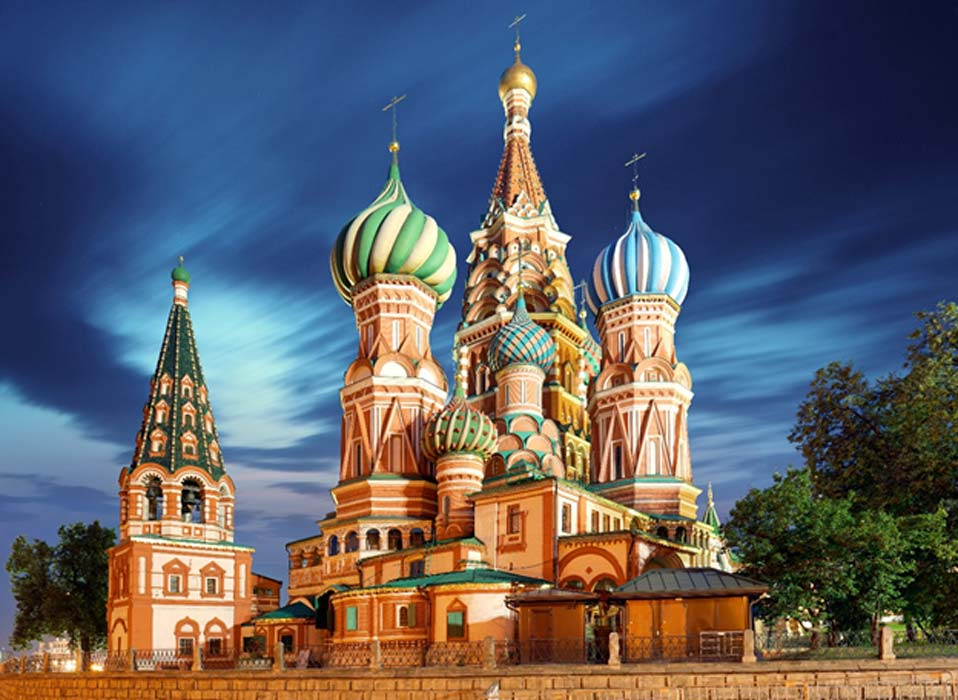
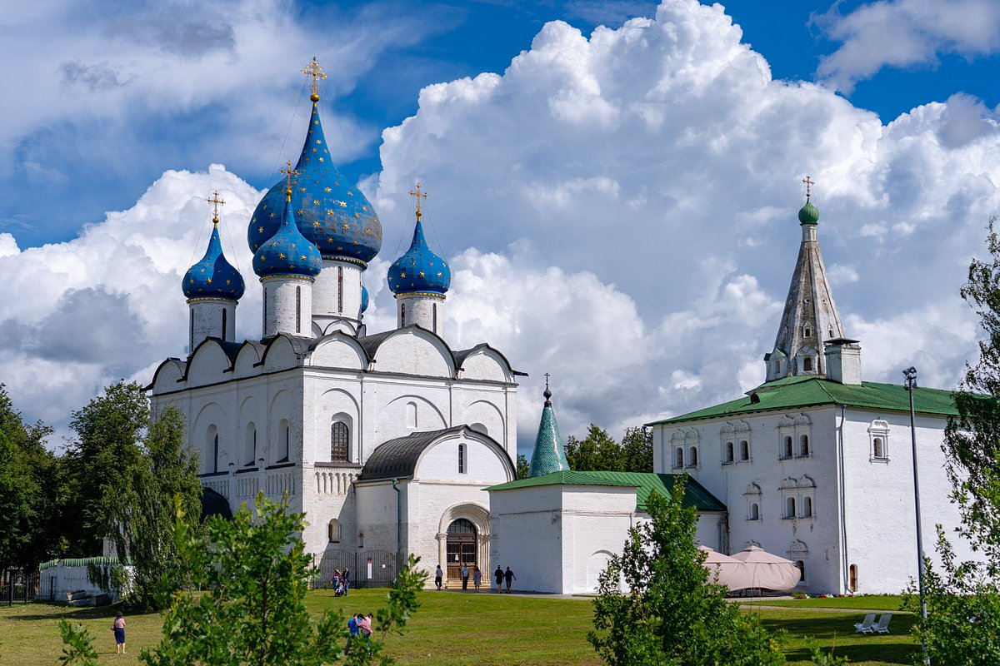
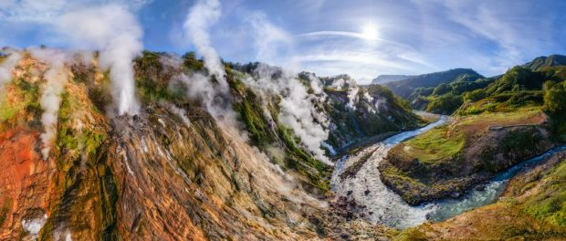
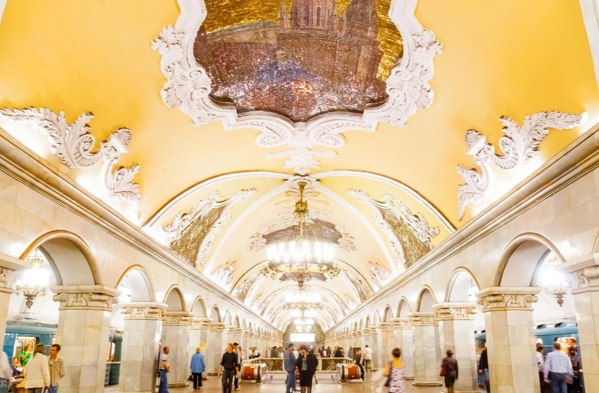
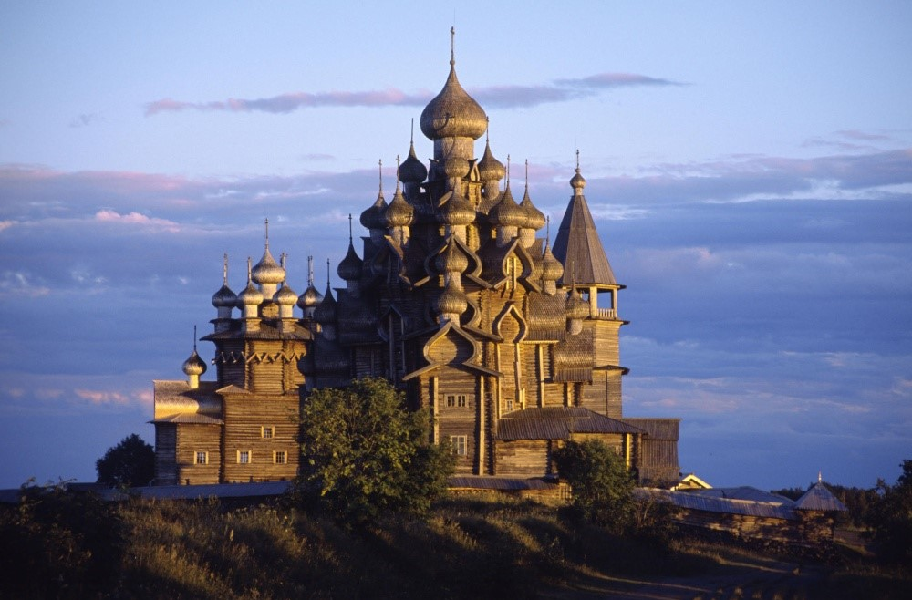
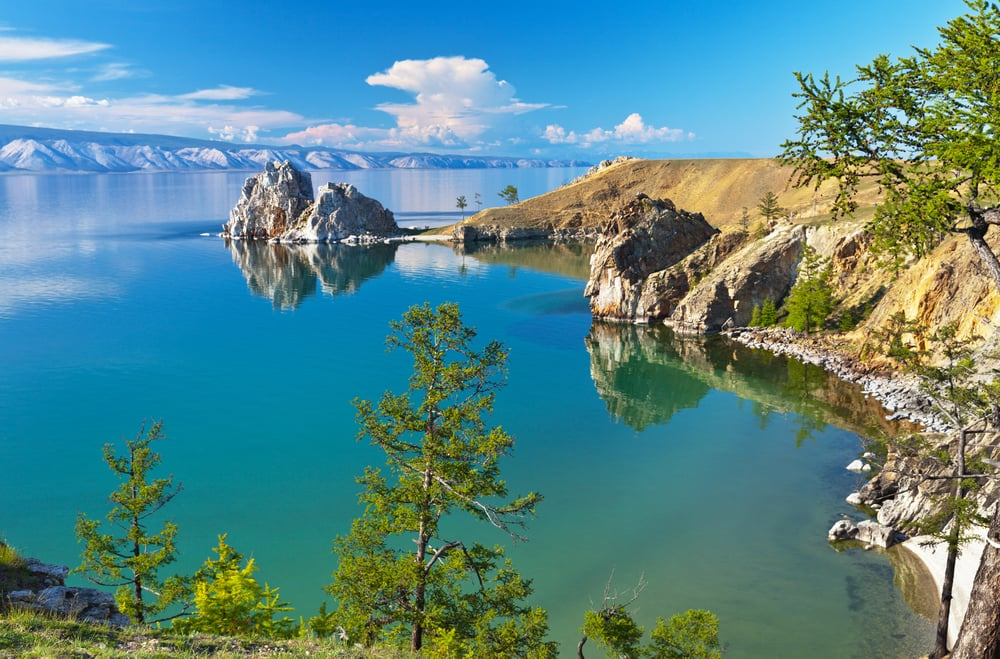

Rusia este o țară în Eurasia. Este cea mai întinsă țară din lume, acoperind peste o optime din suprafața locuită a Pământului. Aproximativ 77% din populație trăiește în partea vestică, europeană, a țării. Capitala Rusiei, Moscova, este unul dintre cele mai mari orașe din lume; alte mari orașe sunt Sankt Petersburg, Novosibirsk, Ekaterinburg și Nijni Novgorod.
Extinsă pe aproape toată Asia de Nord și pe o mare parte din Europa de Est, Rusia se întinde pe unsprezece fuse orare și cuprinde o gamă largă de tipuri de mediu și forme de relief. De la nord-vest spre sud-est, Rusia are frontiere terestre cu Norvegia, Finlanda, Estonia, Letonia, Lituania și Polonia (ambele cu Regiunea Kaliningrad), Belarus, Ucraina, Georgia, Azerbaidjan, Kazahstan, China, Mongolia și Coreea de Nord. Are frontiere maritime cu Japonia în Marea Ohotsk și cu SUA (statul Alaska) în Strâmtoarea Bering.
Bogatele resurse minerale și energetice ale Rusiei sunt cele mai mari din lume, țara fiind unul dintre principalii producători de țiței și gaze naturale din lume. Este una dintre cele cinci țări recunoscute ca deținătoare de arme nucleare și posedă cel mai mare arsenal de distrugere în masă.
DATE GENERALE

Denumirea oficiala: Federația Rusă
Fusul orar: UTC+2
Capitala: Moscova
Suprafata: 17.075.400 km2
Moneda: rublă rusă
Limba oficiala: rusă
Prefix telefonic international: +7
ATRACTII TURISTICE

Catedrala Sfântul Vasile Blajinul este situată în Piața Roșie din Moscova și a fost construită în 1554. Catedrala reprezintă un lăcaș de cult ortodox, iar monumentul este un simbol al orașului și al arhitecturii ruse tradiționale. Biserica adăpostește mormântul Fericitului Vasile.
Catedrala este cunoscută pentru cupolele sale caracteristice sub forma bulbilor de ceapă. Structura originală a Catedralei Sfântul Vasile trebuia să urmeze forma a șapte biserici organizate în jurul unei bazilici centrale, dar arhitectura actuala numără opt biserici secundare și una principală, amplasată în mijloc. Bisericile laterale sunt dispuse într-o simetrie perfectă, dar Catedrala Sfântul Vasile, ca și întreg, nu este un edificiu total simetric. Pereții exteriori ai Catedralei Sfântul Vasile sunt un mix încântător de zidărie roșie pictată cu măiestrie în forme interesante. Ornamentele albe și forma cărămizilor pictate sunt în proporții aproximativ egale. Domurile acoperite cu tablă au fost pictate cu auriu, fapt ce conferă luminozitate clădirii. Utilizarea moderată a inserțiilor ceramice verzi și albastre crează un plăcut efect de curcubeu.

Suzdal este unul dintre cele mai vechi orașe rusești. În secolul al XII-lea, a devenit capitala principatului, în timp ce Moscova a fost doar una dintre așezările sale subordonate. În prezent, Suzdal este cel mai mic oraș din Inelul de Aur al Rusiei, dar are peste 40 de monumente importante din punct de vedere istoric și 200 de situri arhitecturale.
Singura industrie din oraș este turismul. Suzdal a evitat industrializarea vremurilor sovietice și a reușit să păstreze un număr mare de exemple uimitoare de arhitectură rusă din secolul XIII-XIX. În Suzdal există 305 monumente și clădiri protejate, inclusiv 30 de biserici, 14 clopotnițe și 5 mănăstiri și mănăstiri. 79 dintre ele sunt clădiri protejate la nivel federal și 167 sunt protejate la nivel regional.

Valea gheizerelor este o regiune cu numeroase gheizere din Peninsula Kamchatka, a doua cea mai mare concentrație de gheizere din lume. Are aproximativ 90 de gheizere și multe izvoare termale se află pe Peninsula Kamchatka, în extremul orient rus. Accesul în zonă este unul foarte dificil; nu se poate ajunge cu mașina, asadar cel mai bun mijloc de a vizita regiunea este cu ajutorul elicopterului. Temperaturile s-au dovedit de a fi de 250 ° C, mai jos cu 500m. Este o parte din rezervația naturală Kronotsky.

Statiile de metrou din moscova

Insula Kizhi

Lacul Baikal
TRAVEL TIPS
E indicat sa te familiarizezi cu alfabetul chirilic.
 RUSIA
RUSIA